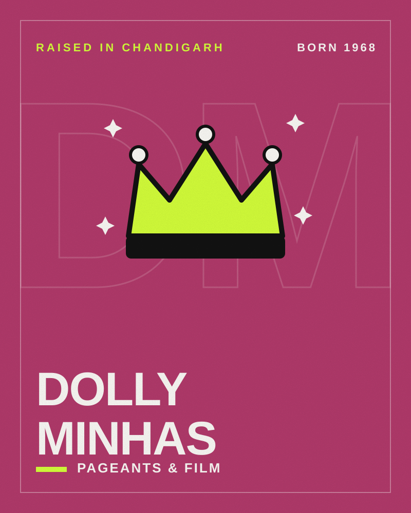

Pageants & Film · Raised in Chandigarh
DollyMinhas
Miss India 1988, actor and model
- Born
- HometownChandigarh (raised)

- 1988Miss India Universe
- 4film languages
Dolly Minhas won Miss India Universe 1988 and represented India at Miss Universe 1989. She has acted in Hindi, Punjabi, Telugu and Kannada films and in TV series from Shaktimaan to Choti Sarrdaarni.
Raised in Chandigarh
From Punjab and raised in Chandigarh, she won the Miss India Universe title in 1988 and competed at Miss Universe the next year.
Decades on screen
She played Rajkumari Bijli in Mahayoddha and Shaliyaa — considered India’s first on-screen Catwoman — in Shaktimaan, and has appeared in TV series including Iss Pyaar Ko Kya Naam Doon? Ek Baar Phir and Choti Sarrdaarni (2019–2022).
Timeline
- 1968Born on 8 February
- 1988Miss India Universe
- 1989Represents India at Miss Universe
- 1999Shaktimaan
- 2019Choti Sarrdaarni
Honours
- Miss India Universe 1988
Quick questions
Is Dolly Minhas from Chandigarh?
From Punjab, she was raised in Chandigarh.
When was Dolly Minhas born?
Dolly Minhas was born on 8 February 1968.
What is Dolly Minhas known for?
Dolly Minhas is known for Miss India 1988, Shaktimaan and Choti Sarrdaarni.
What awards has Dolly Minhas received?
Honours include Miss India Universe 1988.